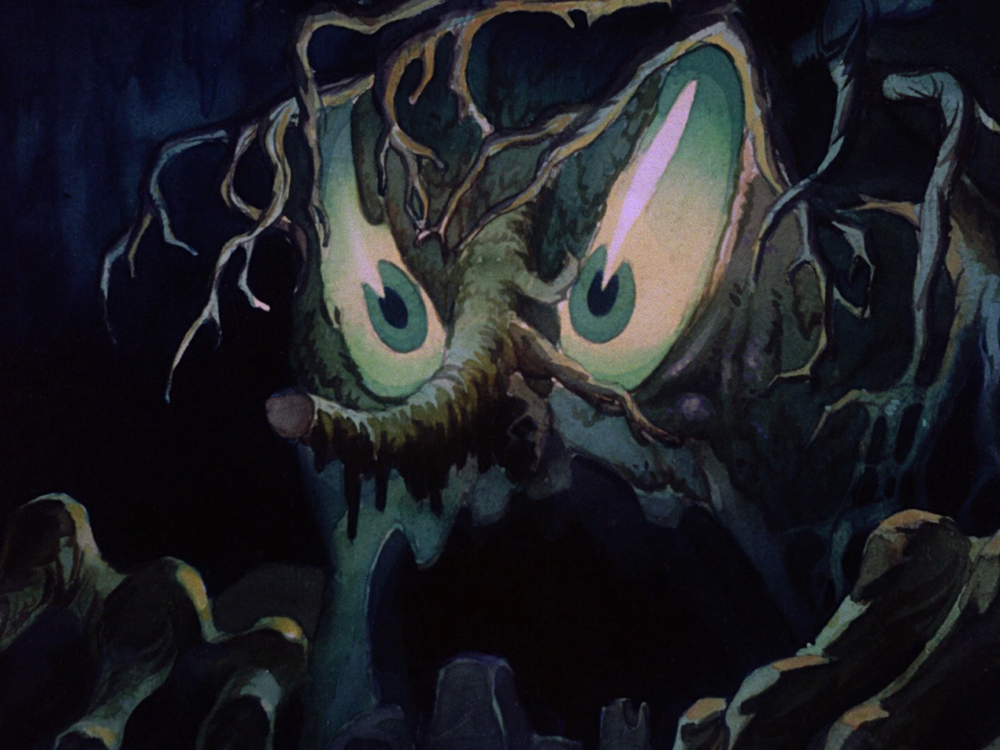
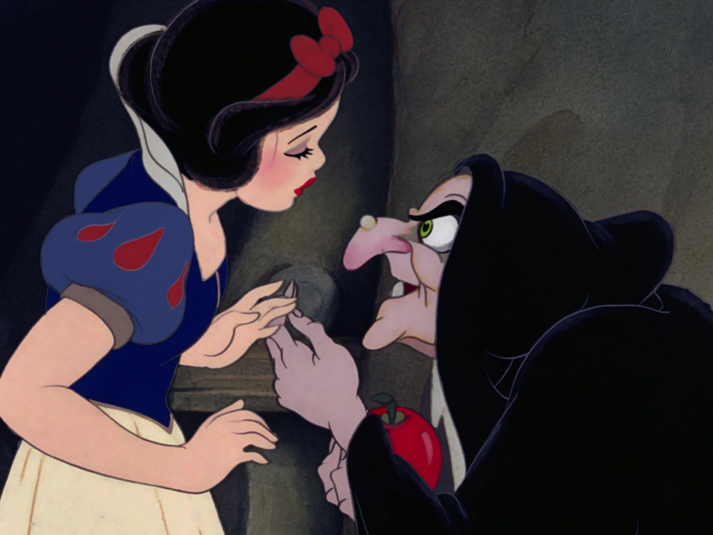

What is the un-childish nature of fairy tales? The valuable essences of fairy tales against prejudices of adulthood
“There is no such thing as the Fairy tale. There are Fairy tales. When we see them we know them; we sense that they are. I congratulate writers for bringing our ageless anxieties and hopes once more to light through the hypnotic and clinical lens that is fairy tales”. Jack Zipes
When you look up the definition of fairy tale you will find many descriptions and definitions, vague and wrong, all opinionated. The truth is that fairy tales are hard to put in a box, they have existed for centuries and have taken thousands of different forms. They have this thing, this aura that allows them to be told repeatedly for generations. Magic polymorphic, any teller can make them his own. To me, it is enough to be fascinated by them….
But I am an adult now, and adults are not sensitive to fairy tales in general, because they think they’re “not meant for them” . As I grew up, I have trouble sharing my interests.I’m misunderstood. «I knew it, of course, she loves fairies and elves because she wears pink lol». I am not taken seriously. «Clara, fairy tales are not serious matter, they are for children.» I can read their eyes. Well, are they really? I don’t know if people would read the story of Little Red Riding Hood to their offspring if they knew that the little girl is proposed to “sleep” with the wolf, eat her granny, drink her blood…which happens to be the first version of the story! Fairy tales bring hope, imagination, moral and self-reflection, but also show misogynistic behavior, gender discrimination and child abuse. They are insightful yet terrific. Are they really for children then? Or are they for adults? What makes them childish and why do I think they’re not? I was told that life is not a fairy tale.
I’ll show you reader, that in fact, it is.
➶ ✧
When I was still very young, my mum passed me a book that she received when she was a young scholar : «Vassilissa- the-Wise, Russian fairy tales». I always read it during my Christmas vacations. The book’s big and heavy with a green cover, showing the characters of the different stories all together. It is composed of eight stories, being the classic of Russian Tales. There’s one large watercolor illustration per story, As well as a small black and white drawing, like an engraved stamp, at the beginning and the end of each text. I hadn’t fully realized it until now that the tales were Russian even if I knew it. I just knew I liked to read «Tsar» instead of «King», and those incredible and unusual names such as «Sirka Bourka», «Nikita », « Matioucha the ash man». I prefer these stories because they were drier and weird, embraced more violence than others. I found that protagonist’s were brutal and harsh to each other and dare I say… I liked it. I had a morbid curiosity for those gruesome passages and the one I remember till this days when a young man had to cut off a piece of his calf to give to the «Eagle » that saved him. Talking about eagles, it along with the Fire Horse, are two animals that often reappear in Russian Tales; way more exciting than the western wood wolf. That’s just my point of view… But it did not prevent me from enjoying those other stories.
My grand-mother was reading me fairy tales from a book she had (the cover’s not really interesting). At that time, I never tried to know who was the author, as if the stories were existing by themselves. Now I can identify that there were different authors, the unavoidable Charles Perrault, Christian Andersen, and off course the famous Brothers Grimm. She was not reading at night to make me fall asleep but during those days of heavy rain, because there was nothing else to do. She was living in the south of France, and we were visiting her only during the summer vacations. Needless to say, rainy days are quite infrequent in the middle of July on the mediterranean coast, so those reading moments were quite rare. We would go into her little office where she was keeping the few photos of her when she was young, her papers, the shell box (box where my brother and I would put the most beautiful shells we found during our daily “beach mornings”) and of course the books filled with fairy tales. The weather was forcing everyone to stay at home and strangely, I felt cut off from the rest of the world…
The rest of the year, I devoured any novel that fell into my hands, including the «Red Tales of the perched Cat» by Marcel Aymé. Those stories were devoid of any magical aspect although still making farm animals talk and creating bizarre, whimsical events. They also described the traditional rural French way of life; which seemed as unreal as any other Middle Age like it. It started like so : “I sat under an apple tree and the cat told me adventures that only he knew about. He knew them because they happened to the animals of the neighborhood and to his friends: the two little girls Marinette and Delphine. Those tales of the perched cat, I give them here (in this book) without changing anything. The opinion of my friend the cat is that they are suitable for all children who are still old enough to understand animals and talk with them.”…
As everyone of my generation (the unique millennials) I also grew up with the animated fairy tales of Walt Disney; Alice in Wonderland, The Sleeping Beauty, The Little Mermaid, Aladdin and Mulan. Some of those tales are extremely old, some are from different cultures, some hold roots in real historical events. Whichever, at the end they all seemed to come from the same person. Some of those stories were also in my grand-mother’s books, but I was asking her to skip them when she was reading, so the Disney version is the only one I know. I don’t think it was clear to me exactly what I was reading and what I was watching, were both fairy tales. If you look up the definition of fairy tale you will find many descriptions and definitions, incorrect and vague, all opinionated. The truth is that fairy tales are hard to put in a box, they have continued to exist for centuries and have taken thousands of different forms. Jack Zipes point of view is a case in point :
“There is no such a thing as The Fairy tales. There are Fairy tales. When we see them we know them; we sense that they are. I congratulate writers for bringing our ageless anxieties and hopes once more to light through the hypnotic and clinical lens that is fairy tales”. Jack Zipes. 1
They have this thing, this aura that allows them to be told over and over again, generation after generation. Magic polymorphic, any teller can make them his own. To me, it is enough to be fascinated by them….
But I am an adult now, and adults are not sensitive to fairy tales in general, because they think they’re “not meant for them” . As I grew up, I’ve had trouble sharing my interests.
I ‘m misunderstood. “I knew it, of course, she loves fairies and elf because she wears pink lol”. I’m not taken seriously.
“Clara, fairy tales are not serious matter, they are for children.”
I can read in their eyes. Well, are they really? I don’t know if people would read the Red Riding Hood to their offspring if they knew that the little girl is proposed to “sleep” with the wolf, eat her granny, drink her blood, and yet that was the first version of the story. Fairy tales bring hope, imagination, moral and self reflection, but also show misogynistic behavior, gender discrimination,and child abuse. They are amazing and horrible. Is it really for children then? Or for adults? What makes them seem childish and why do I think they’re not? If I was told that life is not a fairy tale.
I will show you reader, that in fact, it is...
✧ No needs for wings
to sparkle
“Fairy tales begin with conflict because we all begin our lives with conflict. We are all misfit for the world, and somehow we must fit in, fit with other people, and thus we must invent or find the means through communication to satisfy as well as resolve conflicting desires and instincts.” Jack Zipes 2
Wonder tales and folktales are the stories of the people, for the people and by the people: in the Middle Ages, peasants, travelers, mendiants, soldiers, merchants, everyone was telling each other stories. Told during field work, dinners or community gatherings, they were also spread to the upper class by way of the lower class people who were working as nurses, maidens, etc. The stories showed a desire to celebrate the community, to escape from the rude reality of life, to dream about a better conditions. Each peasant community transformed and added something on the tales as they spread. Children were never excluded from the audience no matter how violent or erotic the stories were6. It continued like this up until the 17th century when, in French salons, aristocrats, at first women, used peasant oral tales and folk tales as a source of inspiration. They could see the emancipatory potential of the narrations to write their own stories for the upper class. It was a new type of tale: fairy tales. They were called this because the authors were putting emphasis on the fairies in the plot, introducing a new type of character...
“Flying fatty, jealous sexy pinup, or sparkling mignonne, the fairies had changed forms but their magic stayed strong... Your guardian angel, a true genuine helper, not an angel in the house but a watch(wo)man...The Fairy”
Pixies, boggarts, brownies, greenies, knockers, lobs, hobs, lubberkins, and others, fairies have many names. The believe in these spirits have existed for millennium and differ from one culture to another. They are magical beings that can’t be placed into to any human gender distinction. But, in the past two centuries, encouraged by those new types of stories, fairies have lost their ambiguous shape and started to be represented with the female gender. The first time the term «fairy tale» has been employed by the interesting Madame D’Aulnoy, in 1690 in her story: “The Isle of Happiness”. She was the first one to introduce the female caretaker fairy character, and those stories were such a trend that the term “Fairy Tales” took over the term “Folk tales” [2]. Madame D’Aulnoy was a lady, and as so many ladies in the late 17th century, she did not have the opportunity to speak up in many ways. The only hobby allowed for a woman of her standing was to use the salon and precisely «the boudoir» (french private cafe where artists and authors would meet to talk and drink absinthe) to recite, tell and read her invented stories. It is important to realize that those places were the only place where women could demonstrate their skills, having only a few privileges in public.
First of all, by marking the trend of fairies in her literature, D’Aulnoy set a differentiation between female writers and male writers and embodied a resistance to manners and « proper behavior » in the society of the late 17th: «It is widely recognized that the seventeenth century public distinguished fairy tales writing as women’s domain, inseparable from the feminocentric salons that nurtured it. Both modernist advocates of women’s tales such as the Mercure, and detractors such as the clergyman Villiers, understood the fairy tale to be a female genre, […] been transmitted by grandmother and governess.»8 The fairies, by their origins (obscure pagan beliefs) and their representation of freedom, were used as a symbol of rebellion against the Catholic kingdom of Louis XIV. Supernatural powers, happiness, and emancipation would obviously clash against the Church values: «Their tales spelled out new diverse standards of behavior that were intended to transform the relationship between men and women. French women writers wanted to live their tales as specially gifted artists, and created and called on the fairies they created to arbitrate on their behalf.” 9Those fairies were sovereign of glorious realms, they were beautiful, generous, and in love. D’Aulnoy insists on the importance of true love as the one and unique reasons for the union between people, and obviously not the arranged wedding. D’Aulnoy’s princesses and queens do not invoke Christian gods to help their children but fairies. Knowing the life of d’Aulnoy -married at a very young age to a crook, thrown in jail after having tried to murder him, gave birth in her cell to her first child (then to three others)-, she might have depended on the help of many women, and through the character of the fairy she pays hommage to those hidden women; the nannies and maidens.10

Scray Tree, Snow white and the Seven dwarfs, 1937
This role of female helpers, is mirroring the of role of fairies in herwritings. The fairy is the one summoned at the birth of a child, the one that gives precepts (to follow or not...), offers gifts and ultimately…orchestrates the plot. They are powerful and uses their knowledge to compensate for human foibles.There’s a real personal identification with fairies and women at that moment. According to Jack Zipes, D’aulnoy’s aim was to rewrite the civilizing process through the representation of modern fairies, who strive to introduce “new customs and moral behavior into narratives, against pietistic restriction of the society.”11 The content and the style of those written fairy tales became more complex, more delicate. In many european countries, aristocrats wrote tales, inspired by the ‘’countryside version’’, to criticize their class. Those new stories for the higher class were again adapted for the lower class often with a shortened plot, simpler language and had multiple versions, which were read to adults and children as well. While they were giving an interesting alternative to traditional love stories, the important role of fairies and their symbol has been forgotten through those adaptations.
Around 1730 it became common to read fairy tales especially to children by choosing only the ones with a didactic12 tone, and by the end of the 18th century children belonging to the upper class were familiar with fairy tales. In return, quickly, with the development of a “child consciousness” at the end of the same century, fairy tales were considered too frivolous and filled with dangerous pagan’s superstitions, for being consciously told to children. Parents were scared that children would be disturbed and amused instead of being taught and instructed...
✧ I love bad guys
Fairy tales continued to be spread, be re-used by different communities (bourgeois, aristocrats, artists, and romantics) as a social communication tool. They were used to condemn or convey different ideas and ideologies, like Madame D’Aulnoy’s utilisation. The function of the fairy tale was changing depending on the new author, or more precisely the “teller”. The Brothers Grimm, the most famous of fairy tales catcher, regarded their work in folklore as a political contribution to uniting the German People after the Napoleon war13. The legends say that the brothers wandered through the countryside to collect peasant tales, but in fact, they mixed up already transcribed tales and mostly their morals. They also re-wrote those stories for children by adding more Christians sentiments and taking out cruel, erotic and overly magical details. Their simplified and moralistic texts are now the most spread and famous fairy tales in our western culture. The Brothers Grimm’s influence is important to point out, for it is they who shift our perception and representation of Evil in stories; fairy tales have been accused to always show a simplistic representation of evil and to rely on a Manichean construction of the plot.
First, it is good to remember that there is not always an evil character in fairy tales. Second, this character is only a villain that provokes, stops, or perturbs the action. It is the representation of an unwanted force/concept that embodies human struggles and make us relate to our conflicts in life. Problem is that in most of the famous fairy tales spread in the 19th century from the Brothers Grimm, the type of villain is almost always the same: the witch, the stepmother, the ugly old lady, basically the frustrated woman/bitch.. Parents/children conflict is a motif 14 that often occurs in fairy tales, and precisely mother/daughter’s one in Grimm’s book : Old women wanting to harm the heroine with deadly force. This observation brings us to think that women were deeply troubled15 at that time, or more that the brothers deliberately chose stories where women were negatively represented... “Since social arrangements in both Grimm’s day and in our own have positioned mothers as the dominant figure in the child rearing process, it may seems logical to locate adult villainy in female characters […] women have been slaughtered into the role of fairy tales villains because of their greater involvement in the childering process. […] whenever collectors had a choice, a distinct preference for stories with female as villains over tales with male giants and ogres has been made.” 16. Indeed the fairy tale is a mirror to our times, and they do not often provide much choice regarding female archetypes. Whose to blame? the fairy tale or the one that writes it? To identify evil is a way to get some sense of priority concerning our cultures social agenda of who is undesirable: like the woman or the witch for example... The strong stereotype of the Witch as an old crazy woman has been disseminated from the Middle Ages until now… But before all those distorted representations of witches, there was only a powerful and single (free) woman that refused a man’s advances17. In folklore, she does not use her broom to sweep the floor of the household but to erase the trace of her step when she wanders in the realm of the wood and does not want to be found. Her Russian homologue Baba Yaga18 is depicted differently from her western sister19. Baba Yaga is an ambiguous and complex character because she does not pledge allegiance to devil or god or human. In her role of the villain in fairy tales she is her own master, neither good nor purely evil :she decides on a case by case basis whether she will help or kill the people she encounters, she is unpredictable for she is testing the heroes that bump into her rotating chicken legs hut20. If a hero is worthy she will be generous with advice but it must to be well deserved.
It has to be taken into consideration that the representation of darkness in stories is important for we do not live in a perfect world and we always we be in conflict with something, but fairy tales do not promote a singular way to show/represent evil. Fairy tales are not by essence misogynistic, but can be used by people with a particular agenda regarding who or what has to be taken down.
✧ Our little monsters
Significantly, it was from 1830 to 1900, during the rise of the middle class, the fairy tale was almost exclusively for children ; It is hard to understand how but they became a method to teach children while diverting them. The institutionalisation of fairy tales within schools helped create a clear distinction for who these stories were intended adults or children. Now only a few are printed in massive quantities for children while the others stay rare and unknown… Is the literature that children read always specified to their own age group? What do children read anyway? Aren’t comics, jokes, advertisements, doll games, computer hypertext etc, all part of children’s literature?»21. [21]
Many wise and advised adults have reshaped books before they end up in small excited hands: authors, editors, librarians, teachers and parents. This group has the control and a precise idea of what children’s literature should and could be. Children’s literature is the most profitable market within the book industry. What our little monsters read should be watched with care and taken seriously. But, strangely enough, when I asked my nephew, Anton, if he liked fairy tales he only mumbled a «bof»22. Strange for a book devorer and Harry Potter fanatique. I asked him why. He replied : «I am tired of the same story of the princess in distress that has to be saved from the dragon, and I already know those stories even before reading them, it is useless, everybody knows them!» Anton did not get to read new stories and it annoys him. Who made my nephew not like them and miss out on great moments? Adults! So the problem comes from the way society look at our children. We need to rethink our way of transmiting stories, that is why I interviewed Judith Eiselin23, to know more about it. She is a great dutch children’s book author. I asker her about her way to write for children and what she thinks about this distinction we make between childhood and adulthood -that I think bring prejudices to fairy tale- here is what she said : “My mother was a very imaginative person who never ever made a difference between stories for children and for adults. It was the culture in our home to have a big understanding and love for children’s books (my mother was a puppeteer). I have, like my mother, always cherished and loved children books and have a great deal of respect for authors - in general- I never ever felt that children books are less worth, and until today I do not understand people who believe it is not/can not be literature. Also, it is just a talent, a gift, to be able to think up stories for children. For me, It was not so much a real conscious choice. It just always felt like my most desirable sort of literature to try to make. Most of my books have something to do with what I imagined as a child. I often experience others not remembering so much, but I still can recall the feelings and dreams from my childhood, also, I don’t feel so very much different as an adult. I don’t understand why people think that feelings or dreams or your inner voice as an adult is completely different than as a child.
“In an interview Annie M.G. Schmidt once said she was not particularly fond of children. Me, like her, do not feel especially for children as a specimen. But whatever age, there are always people around who are really likable and have a good understanding of me, the same kind of humor, I don’t know how to explain it. It has something to do with taste and preferences,age isn’t particularly important. It is not true that all children are imaginative. Also, Schmidt proclaimed that her ‘forever age’ was eight. It did not matter how old she officially was, she still felt/could feel like eight years old. It sounds childish, but in fact, it isn’t. It isn’t at all. I can understand what she meant, it was the feeling not to have to kneel down and force your voice to be comprehensible for a child, it is just your natural way of expressing things. There is no magic in the doing, not a special way to make up a style to write in. Really, there is no difference, I feel, in my writing voice, only the things that I write about differ. But still, children’s literature and adult literature are more alike than unlike. The difference is the perspective. And sometimes the verbs I choose, but I feel like writing understandable and not in jargon, is always a good aim.
“Maybe there is a bit more freedom in writing for children, because you go back to this understanding of the world as being animated. It is the world we all know from fairy tales, where trees can talk and dogs have eyes as big as plates. But they’re also genres in adult literature in which it is possible to write about this kind of magic, come to think about it…I think it is just in some people, in me, to be able to experience the world as animated and able to recall what happens as if it is a first, and new. It has something to do with your senses as well.
“I don’t know what ‘a child’ wants to read. There is no such thing as ‘a child’. I think they differ as much as adults. They are individuals. I write just what I myself like to make up and to read. The only real “children book thing” is it ends well or with hope at least. We can talk about everything with children from their perspective. So I won’t write about sex other than a child overhearing his parents, I guess. I love Andersen’s fairy tales.. I love his language. In some of my books, there are little hints to the fairy of the Snow Queen. My father read Andersen and the Brothers Grimm to my sister and me when we were little. I think all this stories, together with the Bible and myths, are the substrate of our whole art/literature. It soaks in everything, like basic knowledge. I think one of the nice things is how scary and unsettling fairy tales can be. It tells you, child and adult, about things larger than just a prince, a forest and a beggar. When they are good, children’s books are full of questions, they make-believe and question the world. Maybe a lot of people think they are about answers -and be moralistic- But real literature -good children books- offers another way of learning and understanding, and fairy tales do, too.” Judith Eiselin
If fairy tales are dismissed by adults now, it is because they, decided to infantilized fairy tales to suit children but a child is not necessarily childish. Yet, as judith says, there is not so much difference between them and us. Fairy tales suffer from the way we consider children. If children are not taken seriously than fair tales wont be either. If more people would be like Judith, they would understand that there are as many people as there are possible tales.
✧ Before Midnight
The tale, the folk tale, the fairy tale.
Words threw in the wind,
caught by tellers,
written by writers,
imprisoned by… Disney>
The witch, the fairy, the princess, the woods… words that, immediately, are loaded with strong connotations, and come with a multitude of images. What is a witch if not a woman with a crooked nose and pointy hat? What are princesses if not long hair girls in puffy pink complicated dresses? What are fairies if not those flying ladies with starish magic stick and lavender wings? Those images, those representations, those stereotypes, are sticking to our mind. We see them every day, under different forms, without realizing it. The re-thinking of fairy tales is blocked by those multitude of representations which influence our perception of the stories, and those poor stories have a hard time escaping the images we give them. But who gave them those shells? Who dressed them like so? Which apprentice did not follow the magical recipe with care? Which master lost control of its creation? Where and when did this craziness all start?...
…For sure it wasn’t in the first books. When the words told around the fire wound up on the pages of the books, images, they, were rare. Only a few found themselves, in the middle of a page here and there, for decorative purposes. Decorative for sure, informative maybe; giving glimpse about how visualize some scenes and characters and always helping the imagination.24Of course the reader would be influenced, but the text would still stand, strong and complex, favorable for visual interpretations. The tale is deprived from details and descriptions and somehow the economy of words doesn’t preclude allusions. The text feel mystical and so meaningful ; dry and rich at the same time. That is why images aren’t able to explain the scenes but reveal to us unimagined meaningful details.25 Art was also taking inspiration from those ageless stories, and a Fairy painting movement appeared at the beginning of the Romanticism period, that left a mark on the representation of fairy tales. Many illustrations, many interpretations an... The Industrial Revolution reared its head. The Victorian age used the imagery of The Fairy, as a symbol of protest against materialism, a way to escape this monster of steel and steam and to reach Nature and Arcadia26. The character of the fairy is then associated to a utopian, dreamy style that the Art and Craft’s movement and Victorian age crystallized into bucolic, delicate, young and futile women. Becoming « utilized » the fairy appeared in many advertisements, from the corset to absinthe, vanishing into a creature of advertising images27. After the witch, she is one of the first characters that lost her credibility and meaning through the re-appropriation of her image in many mediums. Consequently, fairy-tales were misunderstood and associated with this type of imagery that was not necessary theirs. Soon enough, the Cinema had been created, appearing with its kingdom of movies. George Mélies, the prestidigitator and first special effects producer shot “Kingdom of Fairies”, freely adapted from “La Biche au Bois”, and inspired by the Beauty and the Beast text had become images, images have been animated and the magic started… How particular is it that one of the first movies ever made was a fairy tale? Mélies was “among the first to realize how the fairy tale genre might be enriched by film in unimaginable ways and how film might be enriched by the fairy tales.28” Obviously what if cinema isn’t the best way to show fairy tales? What if cinema isn’t the best way to show the unseeable, the unreal, to animated, the curious, the exceptional?

Scray Tree, Snow white and the Seven dwarfs, 1937
The apparition of the cinema influenced our way of consuming images and therefore fairy tales. Cinema marvels and surprises, it makes you see what you could only imagine in your deepest dreams and this is how the spell is cast. Tricks and effects, and special magic, rapidly the master threw new ingredients in the brew and created…Animation. Mr. Walt Disney and his opponent Mr. Tex Avery animated drawings’ opened up the possibilities of representation and Fairy tales were used for experimentation. The Silly Symphonies showed a cute Red Riding hood, jumping through the colorful technicolor woods while the sexy Betty Boop, remastered for the occasion into Cinderella and Snow white was at the head of the Cartoon style fame, just like the famous Red Hot Riding Hood. Tex Avery used his corrosive style to rethink the stories of fairy tales’s famous protagonists, allowing them to escape from an overused plot.29 Animation and cartoons, printed their recognizable aesthetics on fairy tales: Funny and diabolic, jumping and excessive ; unreal. The rotoscoping30 spell made the public cheer “Snow White and the seven dwarfs” in 1937, and started to establish Walt Disney’s Empire at the top of the game, pulling ahead of Tex Avery’s. Fairy tales were turned into longer films; People loved it! People loved to see those ageless stories coming alive! And soon, Pinocchio, Dumbo joined the Golden Age of the fairy tales animated family, and the Disney monster grew and grew... On se side, in 1946 Jean Cocteau french film maker, filmed a real black and white version of The Beauty and The Beast. Magical and hypnotic, yet disturbing at its core, the movie is considered the key work within the genre of fantasy and created a niche for adult fairy tales movies. It is now considered a must see as it holds its place in the history of cinema. Both ways of representing fairy tales were accepted by adults : unreal and real, drawings and shot images. But, the success and the expansion of Walt Disney Company put the fairy tale movie genre in the shadow. The company created more animated films, with bigger budgets, that influenced a younger generation in the 1990’s. The sorcerer understood the perfect potion for success; re-adapting each successful fairy tale book into Disney’s animation style and with his own agenda. Instead of continuing to bring a corrosive turn to fairy tales story, like Avery have done, Disney chose the 17th artistocrate’s way of translating : reducing fairy tales to simple stories for the mass. He chose from the repertory of the Brothers Grimm’s at first, modifying the story with interesting details but kept the women as villains. This wave of movies totally influenced the perception of fairy tales in general, the stories were “spectacularized”31,and sweetened32, images organized to create the illusion of a just and happy end world. By a systematic reproduction of a perfect utopian schema, by looking and being treated the same way, Disney’s adaptations became Disney’s stories. He succeed in making fairy tales belong to the American film industry, and animation to become a children’s medium. This totalitarianism again emphasized the split between adult and children in fairy tales; it made the adults disinterested... But children are more clever than their parents, because the imagery does not lead to superficial judgment, and it doesn’t prevent them from still reading any fairy tales in interesting ways…
✧ Trusty Cutie, I will not kiss anyone
My pillow was called « Pololo » out of Ariel’s best friend: Polochon. Polochon, alias Flounder in english, alias «chirurgien bagnard fish » as you can find many in the Pacific ocean, was my best friend as well. Actually, I am lying here… the real story is that I had a real Polochon cuddle toy (I am still using the french word and you can understand why)33 but I lost it somewhere and I was extremely sad about it. My parents did not buy a new one, which I understood totally, and I was never pissed at them for, but I had to put my four year old love and affection on to something else. That is when I had the idea to call my favorite tiny cylinder pillow «Pololo ». It didn’t have the same color as the fish, nor the same silhouette , but he had the same round, fluffy, comfy feeling to it, and above all, he had the same way to keep me company at night. My favorite pillow was more than a pillow he was my favorite Toy, he was Polo(lo)chon
In almost every Disney movie I saw, I always had been more fascinated by the relation between the “side” protagonist and a main character than the love story between the main character his / her lover / princess / girl / prince / conqueror / boy his / her lover / princess / girl / prince / conqueror / boy. The side character was a nice friend; an animal that can speak, can be smart and helpful. The friend was a magical object, animal, the friend was loyal. Vladimir Propp, a Russian folklorist, called the friend « the donor » or the « helper ». This archetype can be found in every fairy tale and always have been extremely important to the narrative. The donor is the character that aid the hero and provides him/her magical assistance, if this donor acts on behalf of the hero he therefore takes the role of the helper.34 Whether it is Pocahontas and her racoon Meeko, Mulan and Mushu the cheeky dragon, or the mini mignon tea cup in the Beauty in the Beast, all these characters are different by their importance of role in the story, their ways of helping the main protagonist and their abilities to communicate. Nonetheless, they all are «the helper», the heroes would not be successful in their task without them; without their friend. So those « friends » are really important because they show that one can not accomplish the task themselves without exterior help. Without a Sidekick. Sidekicks are not created for the spectator to identify to them, (I did not want to be Polochon) but to make a connection with the story; the viewer does not idealize the hero but takes mentally his place and becomes friends with the nice sidekick. I wished I could be Mullan not because I had an urge to defend my family and a crush of commander Lee, but because I wanted to have fun with Mushu and tiny cricket. The sidekick are inviting for a journey...
In the documentary « Life, Animated », released in 2016 we meet the Suskin family discovering, facing, and living with the autism of Owen, their youngest boy. He was diagnosed at the moment he stopped talking and lost his mobility. He stayed silent for many years much to the dismay of his parents. But, one day, Owen suddenly could talked to his parents again. The family understood they could only have conversations with him by using lines of any Disney Movies… All this time, when Owen was alone in his room, he was watching Disney and was learning by heart the stories and discussions. He was making connection to life through the prism of animated movies, and as the dad says in an article for the USA Today: «He learned in his own way, how to re-enact each scene, fully loaded with the emotions and the moral lessons embedded in them. Disney evolved into his translator or reality.»35. Those stories became a real lifeline for him and his parents. The family overcame the disability by using the Disney’s ‘’magic’’. Owen also gave a lot of importance to all the side characters of the Disney films. He started to draw them and to recreate his own story called «Me and my Friends » where he was the hero, the grand brother and friend of all the forgotten sidekicks. Owen surpassed the typical stories of Disney to make his own meaningful story. A story where there is no princess or wedding but a story where friends are helping each others and are important in their own ways.
It shows that Owen himself repurposed Disney’s sidekick in his own way. He understood the importance of friendship and implemented the Disney characters to have more empathy. He gave more place to these sidekick to become alive and to plainly tell their advice. Owen’s disney sidekicks are challenged as an individual, contrary to Disney’s point of view where the characters often only existing for the comedic potential that it can bring to the plot.
✧ Thank you
for being here
Animation became a medium for children because the society’s eye mixed up Fairy tales’ values with Disney’s values and ways of representation. By taking over the fairy tale genre and reducing it to honeyed stories for kids, Disney aesthetics and techniques found their way into our subconscious and became the only way to show fairy tales. «He really did not see what he was doing, didn’t know how some people could be offended by it, and certainly could not see that what was basically at fault was his insistence that there was only one true style for animated film–his style36. Yet animation is just a technique, that does not serve childish purposes and should not suffer from those prejudices. Shrek the animation movie from Pixar openly mocks the Disney world with his thumb on his nose by creating a caustic story where the Ogre becomes the cherished star. The story borrows all the stereotypes and construction of the typical fairy tale and destroys them. The movie makes fun of the Disney empire totalitarianism represented by the grotesque Royaume of Dulock oppressing fairy tales characters.
Shrek,the presumed villain/evil and grumpy ogre quickly shows that he is no less human than any other and takes over the role of the Prince. The arranged marriage with the King is cancelled. What makes shrek fall in love of the ‘’princess’’ is not her beauty or her royal blood but her talent in martial art. (oups, let that be a lesson to you Disney, a princess that knows how to fight-and-fart). The Donkey is seen as one of the principal characters and has more freedom in his choice than all the Disney’s sidekicks. Shrek was an enormous success because, finally, someone used animated aesthetics and serious role shifting in a film for adult and children.
For that matter, the fabulous animation Spirited Away by Hayao Miyazaki is a good example of a tale that does not showcase stereotyped characters imprisoned in manicheen dilemmas. Instead, it reveals all kinds of complex figures surrounding a child in her journey. One of them is Yubaba, from the japanese mountain witch folklore Yama-Uba, who along with the name’s resemblance with Baba Yaga, have some of the same characteristics. In the story, when the child crosses the bridge between the human world and the realm of the spirits, Yubaba test the heroin by offering her a job at her Bath house. She definitely is the boss, she looks terrifying and seems to be the one everybody dreads but still she does not harm Shihiro the child. The spectators don’t know if she has to be worried about the witch and this is how the character is so powerful.ust because her purpose does not lie in her degree of evilness but in her actions. I shall also pay homage to Michel Ocelot, a french film maker that have been creating amazing tales for children and adults the past 15 years. His Kirikou, characters are really close from what they could look like in real life, happy grumpy villagers, vivid and funny kids, sexy and charismatic witch. He plays with the code of the traditional character (Vladimir Propp Construction) but twist the plot during the movie into a fable where evil and goodness are not two opposed entities but are complementary aspect of every human.37The aesthetic is refreshing, and at the same time making reference to the first paper theater puppet of George melies static background. It is a piece of art that shouldn’t only be understood and viewed by children...
✧ Empty Puppets
The empire of Disney grew like a tentacular animal and spread all around the world in every possible direction. They created a giant! It took Hollywood, it created enormous amusement Park, reaffirming a misconception between pure entertainment and fairy tales38, it bought other movie companies39. Disney’s poison spread over TV, on the radio, on instagram, on twitter, on video streaming platform(s), it creates memes, games, peluche, tooth brushes, towels, toys. It is worth millions and millions and at its head there is a corporation of indifferent men.40Other fairy tales seems to not be real fairy tales anymore for Disney has established one truth.41 It stole the right to fairy tales, it stole their souls. What are fairy tales if not Disney? What are fairy tales if not princesses looking for princes? I see those unlucky girls with their glossy hair and contorted badly printed faces on plates, napkins and earphones when I do some groceries. Hey Cinderella, what are you doing here? They became products, they became marketing, they became « family entertainment » manufactured crap, losing their essence. They are abused.
Disney did not only sucked the life blood out of old fairy tales, they also hijacke one of the most famous and beloved stories of the 20th century among adults and children; Star Wars. It is one THE most successful fairy tale of the late 20th century and now of the 21st. Without people realizing it, Star Wars is a fairy tale and gets everything from them : the hero, the sidekick, the helper, the kingdom, the magic, the quest, the failure...even the princess. Even the “once upon a time is there” hidden being the “A long time ago in a galaxy far, far away” !Again, this fairy tales was embodied in new technologies and was acclaimed by the public! When Disney produced the last trilogy, the “old generation” stayed away from it while the younger generation really liked it. Why? Yet Star Wars was not really known for its deep philosophical dialogues, or political engagement. It was rather “cute” and whether you like it or not, sometimes a bit ‘’simple’’ (not to say childish…). First, Disney is seen as an art for children’s film industry, therefore adults can’t take seriously something that is obviously made for another generation of potential fans. Even if Disney superficially replaced characters to suit new ideologies 42 it cut the possibilities of imaginations that the previous movies were giving. It gives nothing new, it does not invent anything either. Lucas Production’s Star Wars movies were giving the possibility to imagine outside of the film itself like how fairy tales illustration were working before, but now the plot is extremely restrictive and poor.
There is another problem coming up with in the disney mondialization, and it is this wave of live action of the “classic fairy tales”. It is a storm of these types of movies lashing into our movie theaters. One after the other, we all see the biggest success of the firm being directed a second time into « real » movies, those giant productions crushing other films by their thechnicity, their colors, their effects and off course their sneaky way of using the nostalgia of an entire generation. We (millennials) all loved the animated movies for different reasons, but everyone has his or her favorite. The industry is fooled, those stories will always be a gold mine and there always will be a reason to use them. What better than adding CGI live animation potion in the pot of nostalgia? Here again, Disney banked on the technique and has never wanted to adapt the stories into mature and challenging plots, but just to turn them into hyper real images, because realistic images attract adults, and garner money. Disney’s recycling “live action”43 goal is an unstoppable prophecy 44…The Lion King Movie exploded the box office last summer and is the 7th highest-grossing film of the history but critics were harsh :’’Joyless, artless, and maybe soulless, it transforms one of the most striking title from the Mouse House vault into a very expensive star studded Disney Film […] We’re watching a hollow bastardization of a blockbuster, at once completely reliant on the audience’s pre-established affection for its predecessor and strangely determined to jettison much of what made it special”45.
Its shows that Disney mixed the technique, the aesthetic and the story itself, which also induce the public into error. This is dangerous ! it is emptying the meaning of our stories and images, and it shows the Disney way to deal with fairy tales. There is no fairytale aesthetic, only fairy tales representation. Whatever animated or hyper realistic, it should only be a way to expand our imagination46. By discrediting the type of imagery and the stories, the industry accentuates the gap between fairy tales for adults47 and children, while both could become almost one. Fairy tales suffer from an imagery that has for years been turned into a children’s medium, to satisfy an industry that does not respect its audience. Children..
Intuition. When I decided to write my thesis about fairy tales, I wanted to fight against preconceptions that these stories carry. I did not want to accept that magic, fantasy, hope, strangeness were only for children. So I decided to prove that they were worthy of the adults. I opened the Giant book of the History and I searched in all possible directions the way to justify the legitimacy of the fairy tales. What I found was way more complex than what I was hoping for…
By losing myself in this swarm of stories and testimonies, of hidden details and dark secrets, I did not realize that, the question: what is the un-childish essence of the fairy tale was quite… obsolete. The term « childish » is a value judgment that, already, bring a confusion in this interrogation. I could have ignored it. What childish really mean? Not much: everyone has is own opinion. But still no one like to be called like so… I did not realize at first that, what I was trying to question really was the relation between the child and the adult. What’s wrong with being a child? What is wrong with being an adult? I did not know. But I knew that if we would destroy this barrier, or if we would stop to forbid ourselves, then, maybe the fairy tale will be free. After all, I think I wanted to talk about the freedom of the fairy tale. It does not depend for who the fairytale is for, really, it is for everyone. But its plurality is challenged by the way we treat children, the way we represent it and the way we think there is only one way. And, in this incredible journey that was this thesis, I understood that, myself, I was/ am full of prejudice about what is or what is not a tale. But I learned. I learned that the function of the fairy tale was evolving through times: The fairytale is not a fix story, or a fix form, it is like poetry. It changes, it is waiting to be changed. Its boundaries are expandable. It does not end. It is a mirror in which we look. It is a tool we use. But, somehow we have trouble to use it to learn about ourselves…Because:
The fairy tale is not truly reinvented, it should be used to be more contemporary each time, but it is getting poor by being re-used and not being re-interpreted. When they were still told from a person to another, we could take a step back from the story, see the influence of the teller and take what we wanted in it. It feels now that we can’t do it, and we take those written stories for granted: as they are. We don’t know how to “read” them … Or it seems that we don’t believe in them anymore… because we do not believe in us? Or is it the reflection in the mirror that we don’t want to see? There is no harm to pass on stories, but to create new stories is to create memory, and I would like one day, to see the Red Riding Hood with blue boots.
Thank you Merel Boers, Judith Eiselin, Rik Laring and Rebecca Joly Thank you for having accompanied me, in one way or another, on this journey. Thank you for my provereading fairy Sam Rynanerson